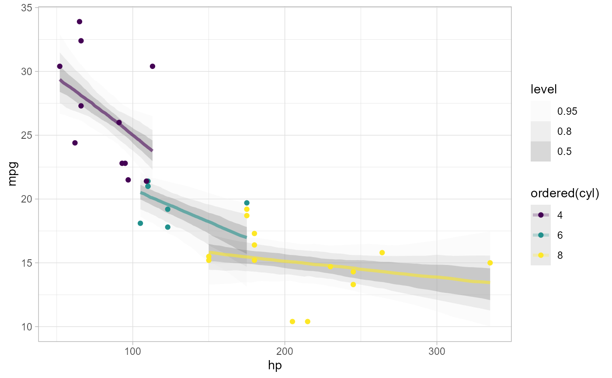

Add draws from a matrix of draws (usually draws from a predictive distribution) to a data frame in tidy format. This is
a generic version of add_predicted_draws() that can be used with model types
that have their own prediction functions that are not yet supported by tidybayes.
add_draws(data, draws, value = ".value")Data frame to add draws to, with M rows.
N by M matrix of draws, with M columns corresponding to the M rows in data, and N draws in each column.
The name of the output column; default ".value".
A data frame (actually, a tibble) with a .row column (a
factor grouping rows from the input data), a .draw column (a unique index corresponding to each draw
from the distribution), and a column with its name specified by the value argument (default is .value)
containing the values of draws from draws. The data frame is grouped by all rows in data plus the .row column.
Given a data frame with M rows and an N by M matrix of N draws, adds a .row, .draw, and .value
column (or another name if value is set) to data, and expands data into a long-format dataframe of draws.
add_epred_draws(df, m) is roughly equivalent to add_draws(df, posterior_epred(m, newdata = df)), except
that add_epred_draws standardizes argument names and values across packages and has additional features for some
model types (like handling ordinal responses and distributional parameters in brms).
add_predicted_draws(df, m) is roughly equivalent to add_draws(df, posterior_predict(m, newdata = df)), except
that add_predicted_draws standardizes argument names and values across packages.
add_predicted_draws(), add_draws()
# \donttest{
library(ggplot2)
library(dplyr)
#>
#> Attaching package: ‘dplyr’
#> The following objects are masked from ‘package:stats’:
#>
#> filter, lag
#> The following objects are masked from ‘package:base’:
#>
#> intersect, setdiff, setequal, union
library(brms)
#> Loading required package: Rcpp
#> Loading 'brms' package (version 2.19.0). Useful instructions
#> can be found by typing help('brms'). A more detailed introduction
#> to the package is available through vignette('brms_overview').
#>
#> Attaching package: ‘brms’
#> The following objects are masked from ‘package:tidybayes’:
#>
#> dstudent_t, pstudent_t, qstudent_t, rstudent_t
#> The following object is masked from ‘package:stats’:
#>
#> ar
library(modelr)
theme_set(theme_light())
m_mpg = brm(mpg ~ hp * cyl, data = mtcars,
# 1 chain / few iterations just so example runs quickly
# do not use in practice
chains = 1, iter = 500)
#> Compiling Stan program...
#> Start sampling
#>
#> SAMPLING FOR MODEL '2d19b3a372313df641edf05db5e9f303' NOW (CHAIN 1).
#> Chain 1:
#> Chain 1: Gradient evaluation took 1.1e-05 seconds
#> Chain 1: 1000 transitions using 10 leapfrog steps per transition would take 0.11 seconds.
#> Chain 1: Adjust your expectations accordingly!
#> Chain 1:
#> Chain 1:
#> Chain 1: Iteration: 1 / 500 [ 0%] (Warmup)
#> Chain 1: Iteration: 50 / 500 [ 10%] (Warmup)
#> Chain 1: Iteration: 100 / 500 [ 20%] (Warmup)
#> Chain 1: Iteration: 150 / 500 [ 30%] (Warmup)
#> Chain 1: Iteration: 200 / 500 [ 40%] (Warmup)
#> Chain 1: Iteration: 250 / 500 [ 50%] (Warmup)
#> Chain 1: Iteration: 251 / 500 [ 50%] (Sampling)
#> Chain 1: Iteration: 300 / 500 [ 60%] (Sampling)
#> Chain 1: Iteration: 350 / 500 [ 70%] (Sampling)
#> Chain 1: Iteration: 400 / 500 [ 80%] (Sampling)
#> Chain 1: Iteration: 450 / 500 [ 90%] (Sampling)
#> Chain 1: Iteration: 500 / 500 [100%] (Sampling)
#> Chain 1:
#> Chain 1: Elapsed Time: 0.103052 seconds (Warm-up)
#> Chain 1: 0.026009 seconds (Sampling)
#> Chain 1: 0.129061 seconds (Total)
#> Chain 1:
#> Warning: Bulk Effective Samples Size (ESS) is too low, indicating posterior means and medians may be unreliable.
#> Running the chains for more iterations may help. See
#> https://mc-stan.org/misc/warnings.html#bulk-ess
#> Warning: Tail Effective Samples Size (ESS) is too low, indicating posterior variances and tail quantiles may be unreliable.
#> Running the chains for more iterations may help. See
#> https://mc-stan.org/misc/warnings.html#tail-ess
# plot posterior predictive intervals
mtcars %>%
group_by(cyl) %>%
data_grid(hp = seq_range(hp, n = 101)) %>%
# the line below is roughly equivalent to add_epred_draws(m_mpg), except
# that it does not standardize arguments across model types.
add_draws(posterior_epred(m_mpg, newdata = .)) %>%
ggplot(aes(x = hp, y = mpg, color = ordered(cyl))) +
stat_lineribbon(aes(y = .value), alpha = 0.25) +
geom_point(data = mtcars) +
scale_fill_brewer(palette = "Greys")

# }